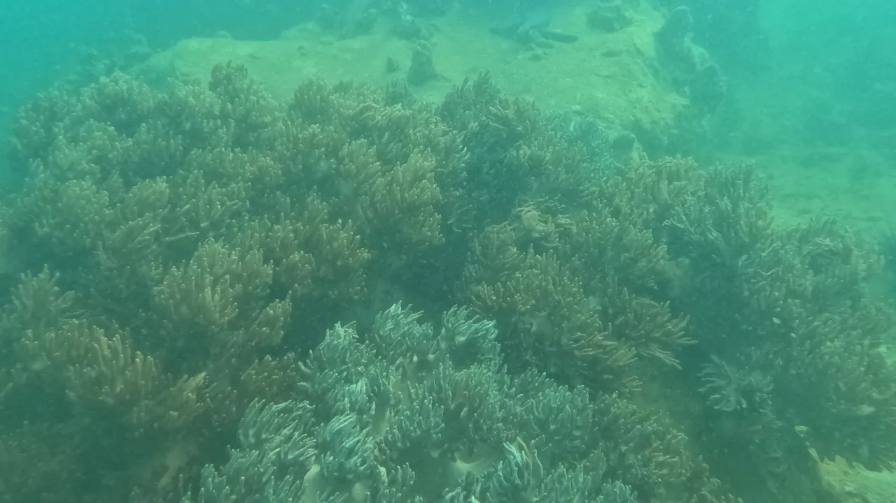
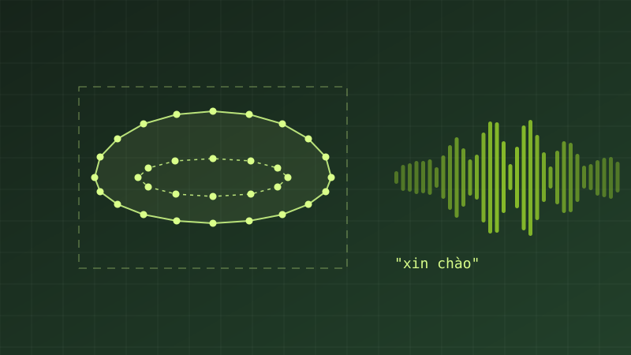
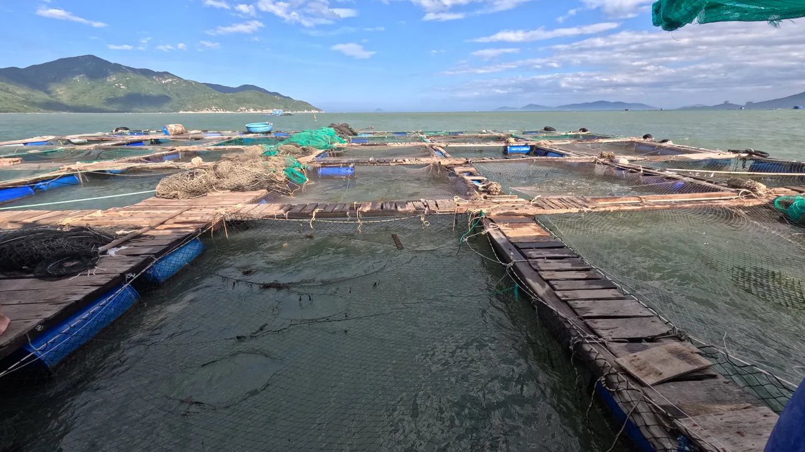
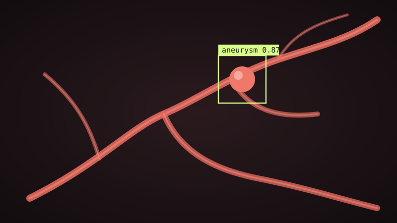

Aaron
AaronXin chào, tôi là
Nguyễn Ngọc
Gia Ninh
Trợ lý nghiên cứu tại GREEN-X, VinUniversity
Tôi nghiên cứu trí tuệ nhân tạo ứng dụng, trọng tâm là thị giác máy tính, với mong muốn đưa kết quả nghiên cứu vào các bài toán thực tế tại Việt Nam.
Đi cùng tôi qua hành trìnhBản đồ 3D: các giai đoạn, dự án và chặng phía trước→Công nghệ thật sự có ý nghĩa khi đến được với con người.
01
Tin mới
- GREEN-X lần đầu có gian trưng bày tại Ngày hội Chuyển đổi số Khánh Hòa 2026. →
- Chính thức là trợ lý nghiên cứu tại GREEN-X, VinUniversity, phụ trách dự án NTCoral. →
- Chương sách về phát hiện phình động mạch nội sọ được xuất bản trong Intelligent Precision Healthcare (CRC Press). →
- Bộ dữ liệu đọc khẩu hình tiếng Việt quy mô lớn được phát hành trên Zenodo. →
02
Nghiên cứu

2025–Đang thực hiệnNTCoralBộ dữ liệu ảnh rạn san hô Việt Nam, xây dựng từ video khảo sát dưới nước và được chuyên gia sinh học biển kiểm chứng.Phụ trách dữ liệu; tác giả thứ nhất của bài báo đang chuẩn bịTrang dự án →
2024–2026Dữ liệu đã công bố; bài báo ở dạng tiền ấn phẩmNhận dạng tiếng nói qua khẩu hình tiếng ViệtBộ dữ liệu đọc khẩu hình tiếng Việt quy mô lớn, hướng tới hỗ trợ người gặp khó khăn về phát âm và thính giác.Xây dựng quy trình dữ liệu và thực nghiệm cơ sở; khóa luận tốt nghiệpTrang dự án →
2026Tiền ấn phẩm; đang bình duyệtRa quyết định tự động trong nuôi trồng thuỷ sản thông minhBài tổng quan về chuỗi từ giám sát đến tác động trong nuôi trồng thuỷ sản.Tác giả Mục 6: Ra quyết định tự động và điều khiển vòng kínTrang dự án →
2026Đã xuất bản 2026Phát hiện phình động mạch nội sọPhương pháp học sâu nhiều giai đoạn; công bố dưới dạng chương sách.Đồng tác giảTrang dự án →04
Định hướng
quan điểm nghiên cứu
Công nghệ thật sự có ý nghĩa khi đến được với con người.
hướng quan tâm
- Thị giác máy tínhNhận dạng, phân vùng và hiểu ảnh, video trong điều kiện thực tế.
- Dữ liệu và đánh giáXây dựng, kiểm chứng dữ liệu và quy trình đánh giá mô hình.
- AI trên thiết bị biênĐưa mô hình về chạy trên thiết bị ngoài hiện trường.